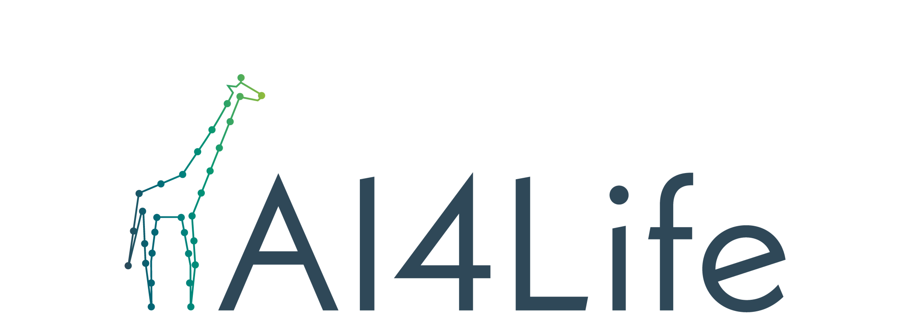

<mat-toolbar class="top-navbar-container">
    <div *ngIf="hideSidebarQuery.matches" class="dashboard-logo-container">
        <div class="corner-ribbon red" *ngIf="environment.develop">Dev</div>
        <button mat-icon-button (click)="toggleSidenav()" style="z-index: 99">
            <mat-icon>menu</mat-icon>
        </button>
        <a routerLink="">
            
            
        </a>
    </div>
    <span class="spacer"></span>
    <div *ngIf="isLoggedIn(); else showSignInLink" class="login-container">
        <app-notifications-button></app-notifications-button>

        <button
            #button
            mat-button
            [matMenuTriggerFor]="loginMenuAccess"
            #menuTrigger="matMenuTrigger"
            class="mobileQuery.matches ? profile-button-mobile : profile-button"
        >
            <mat-icon color="accent" class="mat-icon small-icon">
                <span class="material-symbols-outlined" color="accent">
                    person
                </span>
            </mat-icon>
            <div *ngIf="!mobileQuery.matches" class="user-log">
                {{ userProfile?.name }}
            </div>
        </button>

        <mat-menu
            #loginMenuAccess="matMenu"
            class="logoutDropdownMenu"
            hasBackdrop="true"
        >
            <button mat-menu-item routerLink="profile">
                <mat-icon class="mat-icon small-icon">
                    <span class="material-symbols-outlined" color="accent">
                        person
                    </span>
                </mat-icon>
                {{ 'TOP-NAVBAR.PROFILE' | translate }}
            </button>
            <button mat-menu-item (click)="logout()">
                <mat-icon class="mat-icon small-icon">
                    <span class="material-symbols-outlined" color="accent">
                        logout
                    </span>
                </mat-icon>
                {{ 'TOP-NAVBAR.LOGOUT' | translate }}
            </button>
        </mat-menu>
    </div>

    <ng-template #showSignInLink>
        <a
            id="showLoginButton"
            class="mobileQuery.matches ? login-btn-mobile"
            mat-button
            (click)="login()"
        >
            <mat-icon class="mr-3">person</mat-icon>
            <div *ngIf="!mobileQuery.matches" class="user-log">
                {{ 'TOP-NAVBAR.LOGIN-REGISTER' | translate }}
            </div>
        </a>
    </ng-template>
</mat-toolbar>
